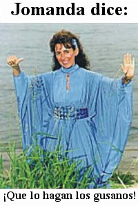
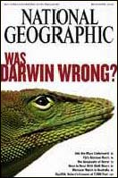
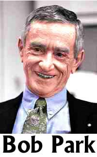

Predicciones calientes sobre las elecciones
El renombrado astrólogo indio Ajai Bhambi escribe una columna muy popular publicada en varios periódicos destacados. También es autor del superventas “Sea su propio astrólogo”. Este sabio declaró, antes de las elecciones, que vio las estrellas y planetas favorecer al candidato presidencial estadounidense John Kerry por sobre el presidente George W. Bush en las elecciones del 2 de noviembre. Dijo:
El horóscopo de Bush muestra a Saturno, Venus y Mercurio. Todos están ubicados en Cancer Lagna y todos ellos se ven incómodos, lo que es la razón por la que su elección y su mandato han sido controvertidos. Estos tres planetas son poco favorables para Cancer Lagna y crean problemas de tiempo en tiempo.
El horóscopo de Kerry era mucho mejor que el de Bush, dijo. “La configuración total definitivamente constituye un líder carismático”, le dijo a la prensa, extendiéndose sobre las posiciones y aspectos exactos de las estrelals, concluyendo que éstos “resultarían desafortunados y resultarían en una clara derrota de Bush”.
Otro destacado astrólogo indio, Lachhman Das Madan, el “Rey de los Astrólogos”, se mostró de acuerdo. “Revelo el fallo cósmico de que George Bush no puede convertirse nuevamente en presidente de los Estados Unidos”. Bueno, ahora no, luego de que pasen cuatro años, pero no creo que eso haya sido lo que el gurú Madan estuviera tratando de decir. Este astrólogo se vanagloria de ser “el líder mundial de la astrología con un registro imbatible de predicciones exactas publicadas”.
El destacado astrólogo y místico S. R. Krishnamurti dijo que no sólo Kerry ganaría sino que su mandato como presidente traería “paz al mundo”. También se nos dijo que la “astrología de hojas de palma” (también de la India) predijo “una victoria de Kerry en medio de una confusión”, con
… maniobras deshonestas referentes a un escándalo monetario y a política sucia por parte de una mujer. Las predicciones afirman que el vicepresidente se convertirá en el presidente interino, y que un tiempo después el presidente Kerry asumiría el poder.
Esta forma especial de astrología, nos dicen, fue escrita por santos y videntes hace miles de años. Oh. Ya veo.
El 3 de noviembre, luego de los hechos reales, los astrólogos Krishnamurti y Lachhman Das Madan tuvieron un duro trabajo intentando explicar en qué se equivocaron. Los elementos que habían visto como favorables para Kerry ahora se apreciaban “no lo bastante fuertes para llevarlo a la victoria”, dijo Krishnamurti, y que “el Sol y la Luna, que antes estaban del lado de Kerry, también parecen no favorecerlo”. Madan, favorito de la clase política india, dijo que esperaría “hasta que se conozcan los resultados definitivos”. Último momento: ya se conocieron. Perdiste.
El astrólogo Bhambi, que también había predicho una victoria de Kerry, estaba de viaje en Estados Unidos y fue posible comunicarse con él para conocer sus comentarios.
Sí, la astrología se ha desempeñado como se predijo…
Aquí en la JREF, un ruidoso aspirante al premio del millón de dólares ha estado chillándonos por meses, y puede que encuentren informativa esta diatriba muy típica, con amplias correcciones gramaticales y ortográficas para que puedan sumergirse en ella. El 12 de octubre escribió:
¡Soy un profeta de Dios! Y he aquí algunas de mis profecías en orden cronológico:
#1. Los Yankis de Nueva York ganarán la Serie Mundial este año 2004.
#2. Paul Harvey hablará sobre mí y mis profecías y mi historia en su programa de radio antes de Halloween. Le pedirá a su audiencia que apoye al presidente, refiriéndose al presidente George W. Buch, en la próxima elección. Paul Harvey arderá hasta morir luego de esta transmisión, probablemente este año o como mucho al principio de 2005.
#3. El senador John Kerry ganará las elecciones presidenciales de este año el 2 de noviembre de 2004.
#4. El presidente John Kerry subirá los impuestos antes de morir.
#5. El presidente John Kerry morirá ejerciendo su cargo luego de unos pocos días de asumir. Quizá en febrero.
#6. John Edwards no será presidente.
#7. Jimmy Carter será presidente.
#8. Jimmy Carter se cambiará el nombre.
#9. Jimmy Carter se divorciará de su esposa.
Estas profecías se cumplirán. Y esto no es sólo una adivinanza. Y estas profecías no pueden ser fraguadas o imaginadas. Y no sé cómo va a comprobar usted mis capacidades en alguna oficina clínica. Sólo quiero crédito por lo que hago. No quiero que la gente diga, después de que estas cosas se cumplan, que soy un mentiroso. Porque he sido un profeta que hace profecías toda mi vida para mucha gente. Y siempre se cumplen.
Créanme, todas estas fallas proféticas, ya sea del aspirante que acabo de citar o de los astrólogos indios, no les hará detenerse ni reflexionar si deberían seguir o no ejerciendo sus autoengaños. Rebotarán de nuevo con excusas, racionalizaciones y explicaciones vacías de poderes que no existían en un principio.
Ah, sí, Sylvia Browne (la Insumergible Browne) predijo una victoria de Kerry en las elecciones, pero podríamos haberlo esperado, ya que también predijo que Bill Bradley ganaría las elecciones de 2000. Una cosa hay que admitir: Sylvia es consistente.
Cuidado: plomeros trabajando
El lector Don Riefler reseña “Cazadores de Fantasmas” para nosotros:
[Su reciente] comentario incluía una carta detallando el nuevo programa “Prueba positiva” de SciFi Network así como una breve mención de “Ghost Hunters”. Lamentablemente, el escritor de esa carta me ganó de mano en comunicarse con la JREF sobre tal disparate, pero en verdad no se castigó demasiado a “Cazadores de fantasmas”. En lo personal me hecho la costumbre de mirar esos programas cada miércoles a la noche, aunque parece tener poco efecto más que indignarme hasta alcanzar mayores niveles de escepticismo. Pero supongo que eso es bueno.
Como sea, el programa “Cazadores de Fantasmas” es sobre dos plomeros que dirigen una organización llamada “TAPS”, sigla de “The Atlantic Paranormal Society” 1. Junto con sus compañeros y compatriotas en TAPS, estos dos plomeros investigan afirmaciones paranormales en Nueva Inglaterra e incluso tan lejos al oeste como Pennsylvania. Inician cada investigación, dicen, con la intención de refutar las afirmaciones paranormales. A pesar de esto, sin embargo, parecen ser sorprendentemente crédulos, y aunque el programa documenta las investigaciones en el orden en que se producen, y es obvio que no están salteándose nada ni simplemente ignorando los casos negativos, TAPS aún no ha refutado una sola afirmación fantasmagórica.
Creo que la culpa la tienen sus métodos, al menos en parte. Mirando este programa, me di cuenta por primera vez en todos los años que he estudiado lo paranormal cuán absolutamente risibles son los métodos de los “cazadores de fantasmas”. Trabajan desde un sistema de asunciones, ninguna de las cuales tiene prueba alguna de veracidad, y asumen que lo que hacen es “científico” aunque su propia “ciencia” presupone alguna clase de alma y “vida después de la muerte”. Me parece que cada “investigador de fantasmas” en televisión ha robado sus métodos de otro “investigador de fantasmas” en televisión. Desde la medición de campos electromagnéticos (“Esto funciona porque los espíritus son energía pura”, explican como conocedores a un público ignorante) a grabaciones en cinta de “voces espirituales” (llamados FVE por “Fenómenos Vocales Electrónicos”; supongo que así suena más erudito) parecen ser una parodia de todos los demás de su propia pequeña comunidad.
Parece haber alguna clase de ciclo de alimentación en el cual la fe de cada cazador de fantasmas en los métodos se refuerza por la fe de otro cazador de fantasmas y viceversa: “Esto funciona porque Bob lo dice”, dice William, y Bob cree porque William lo hace. Todos usan los mismos métodos, ninguno de los cuales puede alegar verdadera confiabilidad o prueba. El mas mínimo sonido que suene hmano en un fragmento fuertemente alterado por computadora es motivo para creer inmediatamente que hay espíritus presentes, y si un campo electromagnético fluctúa, bueno, señor, más vale que llame a los doctores Venkman, Stanz y Spengler 2.
Los dos protagonistas (los supradichos plomeros) están acompañados por una panoplia de personajes interesantes, desde un “experto paranormal” crédulo en extremo que perdió su trabajo porque pasaba demasiado tiempo con TAPS, a un par de “demonólogos” (¿dónde obtengo ese doctorado?) que, aunque no son sacerdotes, pastores ni predicadores, realizan exorcismos con frecuencia y discuten para la cámara teorías jactanciosas e imbéciles de presencia fantasmal. En general, es más una extraña telenovela paranormal que otra cosa, en la que los “investigadores” se gritan entre sí y tratan de sonar instruidos; debo preguntarme si el SciFi Channel los toma en serio o no, a juzgar por los cortos intermitentes de los plomeros declamando con elocuencia sobre lo paranormal mientras instalan PVC o destapan un excusado. También está el aviso publicitario que dice algo parecido a “dos investigadores destapan las profundidades de lo paranormal”… ¿Coincidencia accidental, o un mal chiste con la intención de resaltar lo absurdo del programa? Decídalo usted mismo.
El nuevo “miércoles de SciFi” tuvo un efecto positivo inesperado, sin embargo. La combinación de esos patéticos programas de televisión, mi relectura de “Por qué la gente cree cosas extrañas” de Michael Shermer, y mi clase titulada “Análisis crítico de la parapsicología (o, como dijo el profesor el primer día, “Análisis escéptico es más exacto, pero no me dejan usar ese título”) todos han contribuido a remover mis humores escépticos inquietándolos de forma nunca vista, causándome a su vez que encontrara una nueva organización en mi hogar en la Universidad de Purdue: La sociedad de escépticos de Purdue. La única otra organización comparable es la de “Rastreadores de Fantasmas de Lafayette”, un grupo concienzudamente crédulo que, según todas las apariencias, es incluso peor que mis nuevos plomeros favoritos.
La misión de los escépticos de Purdue es investigar y refutar afirmaciones de lo paranormal (así como establecer experimentos estrechamente controlados para aquellos de la zona que quieran probar sus capacidades “psíquicas”) en el área de Purdue y sus alrededores, y he adoptado como misión personal evitar como la placa la “metodología” antigua e inútil preferida por los “cazadores de fantasmas” en todas partes. Sólo estoy “cazando” fantasmas en el sentido de que estoy intentando destruirlos, usando la ciencia y la racionalidad como armas. Deséenme suerte, y no se desdeñan sugerencias.
¿Quiere apostar un millón, doc?
El lector George W. Maschke de AntiPoligraph.org se entusiasma:
El doctor Louis Rovner, un destacado operador poligráfico de California, ha hecho público (a través de PR Newswire) un comunicado de prensa titulado “El polígrafo: imbatible, dice psicólogo de California”. Con toda frecuencia, tales afirmaciones públicas por parte de aquellos que tienen un interés particular en la perpetuación de la poligrafía (una ciencia inventada que ofrece seguridad inventada) no son sometidas a escrutinio.
De modo que he desafiado públicamente al doctor Rovner a apoyar su afirmación, señalando investigación científica que la contradice junto con los ejemplos de espías tristemente célebres y un asesino en serie que han derrotado al polígrafo. Vea “Un desafío público al doctor Louis I. Rovner”.
El doctor Drew C. Richardson, quien hasta su retiro era el experto científico principal de la División de Laboratorio del FBI, tiene vigente un Desafío a las Contramedidas Poligráficas para que la comunidad poligráfica pruebe su supuesta (pero nunca demostrada) capacidad de detectar contramedidas poligráficas (técnicas para pasar el polígrafo o derrotarlo). El desafío del Dr. Richardson ha estado vigente por más de 1000 días sin que ningún operador poligráfico haya adquirido la confianza para aceptarlo.
Bueno, la JREF le sumará un millón de dólares a la oferta del Dr. Richarson para endulzarla, pero aún así nadie la aceptó. Hablan mucho, pero no salen a la palestra… Me pregunto por qué.
El diablo está en la Armada
Muchos se entusiasmaron con la decisión reciente de la Armada Real británica de permitir a un marino declarar como su religión el satanismo. Hubo hurras por la libertad religiosa (aunque uno se pregunta si una declaración de ateísmo hubiera producido tanto regocijo) y hubo ominosas advertencias de las calamidades que seguramente acechaban ante esta relajación de la vigilancia. No me sorprendió que el corresponsal John Atkinson me informara que una de las personas más ingenuas de la Tierra se ha sumado recientemente a la discusión abandonando todo sentido común… como de costumbre. El autor Colin Wilson (vea, en inglés, http://www.randi.org/jr/060702.html) ha escrito en el periódico británico The Daily Mail:
En la segunda mitad del siglo XX, mucha gente aburrida de clase media empezó a unirse a grupos satánicos con el mismo espíritu que intercambiaban esposas o tomaban cocaína.
En 1959, por ejemplo, el afamado periodista fotográfico Sergei Kordeiv se mezcló con un grupo así en Burnham-on-Crouch, Essex. Él y su esposa pagaron una suscripción de £100 y los llevaron a una gran casa victoriana; se les dijo que se desnudaran, y los llevaron a una habitación negra y azulejada que tenía el símbolo mágico de un pentáculo blanco en el piso y velas negras en un altar.
Los vendaron y pasaron una iniciación ritual. Luego de varias noches parecidas más entre iniciados desnudos, se los hizo arrodillarse delante de un hombre enmascarado y jurar obediencia a Satán, luego de lo cual debían sellar el juramento con su propia sangre.
Experimentaron un curioso cosquilleo eléctrico en sus cuerpos. Luego de su compromiso ante Satán, la suerte de Sergei Kordeiv se volvió de verdad notable. Fluía el dinero y su carrera despegó.
Pero el entusiasmo de Kordeiv y su esposa empezó a desvanecerse luego de que los forzaron a presenciar el castigo ritual de una niña acusada de traicionar secretos al hablar casualmente con no creyentes. Se ofició una Misa Negra y la chica fue violada por un hombre enmascarado. Luego se sacrificó un gallo joven y todos debieron beber su sangre. También se supo que el hombre de negocios con quien la chica había traicionado las confidencias de los satanistas cayó muerto de un ataque cardíaco en el momento exacto en que realizaban la misa.
Los Kordeiv se retiraron del grupo, y de pronto su suerte terminó. Kordeiv casi quebró y su esposa estuvo a punto de sufrir un colapso nervioso. Y una noche su estudio fue destruido, aunque no había signos de una entrada forzada.
Estoy de acuerdo en que podría haber sido una racha de mala suerte. Pero hay otra instancia en la que se ha considerado que el satanismo tenía una conexión directa con la declinación de un hombre…
¡Ya basta! Me imagino que lo próximo que escuchará Wilson son las pisadas de los piecitos de los renos en el techo. Le encantan estas historias estrafalarias, y de hecho vive de aceptarlas ciegamente y repetirlas de forma impresa. ¡Incluso cree que un fulano del Reino Unido llamado Geller dobla cucharas con su mente! Sí, así de mal está.
La cremación duele
El lector Mario Tamboer, en Oostkapelle, Países Bajos, os dice lo último sobre “Jomanda”, la “psíquica” holandesa actualmente en boga que tiene todo el campo prácticamente para ella en ese país:
Nunca vi que mencionara en sus comentarios que todos esos médiums que hablan con los muertos dieran nunca una mala noticia. Todos están siempre felices, envían su amor, etc. Pero hoy, ¡todo esto ha cambiado! El “Telegraaf”, uno de los periódicos más grandes de Holanda, publicó en primera plana una revelación: una advertencia de la médium Jomanda. Ha recibido noticias del “otro lado” de que uno nunca debería ser cremado porque es extremadamente doloroso. Ella tuvo contacto con varios muertos que le dijeron eso. De acuerdo con ella “el cordón invisible que conecta el cuerpo y el alma arderá muy rápidamente. Un proceso horrible”. Y en caso de que se lo pregunte, también dijo que uno “no sentirá cuando los gusanos se coman su cuerpo en la tierra, porque eso sucede muy lentamente”. De acuerdo con el vocero de la Asociación Nacional de Crematorios: “Nunca escuchamos esto de otras personas con el don de Jomanda. Está en su mente”.
Pero nótese que se presume que “otras personas” (quizá con nociones menos sombrías) tienen este “don”. Supongo que Jomanda tenía un día lento, y sabía que los medios se aferrarían a cualquier tontería con la que ella saliera. ¡Puedes confiar en ello, Jo! Mario continúa:
Oh, y en caso de que alguien piense que Jomanda es una chiflada inofensiva, cuidado: no lo es. Es una sanadora por la fe cuya manía más notable es que siempre usa un vestido azul. Surgió a la fama gracias a un programa televisivo llamado “El mundo paranormal de Tineke”. Tineke, a propósito, actualmente está vendiendo pseudomedicina magnética en televisión, el Biostabil 2000. Primero ella regalaba tarjetas de negocios “energizadas” y luego vendió aguas de agua “energizada” e hizo “sanaciones”.
Hace unos cuatro años, a una celebridad televisiva llamada Sylvia Millecam se le diagnosticó cáncer de mama. Jomanda le dijo que no era cáncer de mama, sino una infección bacteriana de sus implantes de siliconas, y que ella podría ayudarla, junto con otros sanadores alternativos. De acuerdo con el informe oficial de las autoridades de salud, Millecam fue tratada con casi todas las pseudomedicinas conocidas por el hombre, incluyendo la homeopatía y los campos magnéticos, casi hasta el final. Cuando finalmente la llevaron al hospital sufría un gran dolor, y apenas podía respirar, estar de pie, sentarse o acostarse. Todos que los doctores pudieron hacer fue decirle que viviría como mucho dos semanas.
Jomanda puede estar engañándose a sí misma, pero como sea no es una persona inofensiva en busca de atención, sino una mujer muy peligrosa. La prensa está actuando de forma completamente irresponsable brindándole atención a esta mujer… en la primera plana, nada menos. Ah, y las autoridades de salud holandesas aún no han actuado, ni contra ella ni contra los otros curanderos involucrados…
Apoyo para Darwin
El lector Jeff Casey informa:
Acabo de volver de un viaje a Hong Kong donde me hice con el último número (de noviembre) de la revista del National Geographic. La tapa pregunta: “¿Darwin estaba equivocado?”. Obviamente esto me llamó la atención. Me corrió un escalofrío por la espalda cuando me pregunté si National Geographic se habría pasado al Lado Oscuro. Después de todo, el canal de televisión lo hace de vez en cuando. Pero una revisión rápida del artículo alivió mis temores. El subtítulo del artículo interior afirma: “No, la evidencia a favor de la evolución es abrumadora”.
El artículo es fascinante y ayuda a explicar lo que es una teoría científica y cuánta evidencia existe para apoyar esta teoría en particular. Da ejemplos del mundo real recorriendo varias disciplinas científicas (biogeografía, paleontología, embriología y morfología, para mencionar unas pocas) que apoyan la evolución, y muestra cómo la evidencia sigue aumentando. La mejor parte del artículo explica cómo los científicos han hallado registros fósiles para una amplia cantidad de formas intermedias de ballenas. ¿Sabía usted que la especie más estrechamente relacionada con la ballena es el antílope? ¿Cuán fascinante es eso?
El doctor Philip Gingerich, un paleontólogo que condujo la investigación, describe su trabajo como “una experiencia espiritual”… ¿Puedo tener un “Testigo”? ¿Quién dice que se necesita un dios y una religión para tener esa sensación? Y para hacerlo aún mejor, debido a la abrumadora evidencia del ADN y de los fósiles, el doctor Gingerich tuvo que descartar su teoría original de que las ballenas descendieron de un grupo de mamíferos carnívoros del eoceno en favor de esta nueva teoría. ¿Y saben qué? A él le pareció bien. ¿Cuántos creacionistas querrían descartar sus teorías a la luz de la evidencia abrumadora? Bien, obviamente no lo han hecho, o no estaríamos teniendo este debate.
Jeff, cualquier científico, tal como he señalado con anterioridad, tiene que estar abierto a descartar, modificar, revertir o abandonar su teoría, cuando se le presentan evidencias mejores o refutatorias. Esa es la principal diferencia entre ciencia y dogma.
Hubo una sección muy desilusionadora en este artículo. Describía una encuesta de 2001 de Gallup que indicaba que “no menos del 45 por ciento de los adultos estadounidenses que respondieron estuvieron de acuerdo con que ‘Dios creó a los seres humanos prácticamente en su forma actual aproximadamente en los últimos 10.000 años’”. El trabajo no terminó y la lucha debe continuar, pero tengo que decir que demasiada gente sigue demasiado ignorante de esta teoría científica comprobada.
Como sea, quería destacar esta maravillosa entrega de la revista del National Geografic. Siempre me gustó la revista y nunca más que ahora.
Jeff, vi y disfruté ese artículo, y por alguna razón desconocida no lo mencioné a los lectores de esta página. ¡Gracias por aguijonearme! En relación con los hallazgos de la encuesta de Gallup, y teniendo en cuenta el ataque a la ciencia tan popular hoy en día, y que parece que seguirá usándose por los próximos cuatro años, les diré que el lector Jim Mitchell me alertó sobre la reciente aparición en el Columbia Journalism Review de un artículo de Chris Mooney: “Cegados por la ciencia: cómo la cobertura ‘equilibrada’ permite que la ciencia fronteriza atente contra la realidad”. Aquí el autor discutió en detalle los problemas que experimentan los periodistas que buscan presentar puntos de vista justos y equilibrados sobre asuntos políticos y científicos. Señaló:
Lo que es más, la pregunta de cómo sustituir la exactitud por el mero “equilibrio” al informar sobre la ciencia se ha vuelto más aguda que nunca en la lucha de los periodistas por cubrir la administración Bush, cuyos científicos han sido acusados extensamente de distorsiones científicas. Como ha señalado la Unión de Científicos Preocupados (una alianza de ciudadanos y científicos), al igual que otros críticos, las declaraciones y acciones de la administración Bush con frecuencia le han dado estado de privilegio a un punto de vista científico fronterizo por encima de una conclusión bien documentada y extremadamente robusta de la ciencia convencional. Los periodistas han tenido que decidir, por lo tanto, si informar sobre una batalla de declaraciones entre los científicos y la Casa Blanca (la cual ha tenido muy pocos defensores científicos) o ir al fondo de cada aso de supuesta distorsión e informar quién tiene en verdad la razón.
Pienso que este artículo, que se halla en http://www.cjr.org/issues/2004/6/mooney-science.asp (en inglés), deberían leerlo todos los escépticos, para proporcionarles los datos que necesitan para exigir mejores normas y cuidado por parte de los periodistas que elegimos nos informen.
Mucho ruido pero ninguna acción
Me cuentan que el columnista Art Dudley, en el número de noviembre de la revista Stereophile, me menciona como un “autodenominado mentiroso y artista del engaño” e “intelectualmente deshonesto”. Diré más sobre esto más adelante, cuando me tome el trabajo de educar a Dudley; no es una tarea fácil, puedo asegurárselo. Su artículo es un perfecto ejemplo de la vacilación y la confusión por parte de un “experto” que aparentemente eludió comprometer su juicio sobre la capacidad de las Piedras Shakti de mejorar la calidad de audio. No es uno de los idóneos que desafié originalmente a obtener el premio del millón de dólares de la JREF por aceptar y apoyar el producto, pero ahora lo agrego a la lista, junto con Frank Doris de “The Absolute Sound”; Clay Swartz, Clark Johnson, y David Robinson de “Positive Feedback”; Larry Kaye, Wayne Donnelly, y Bill Brassington de “fi”; Bascom King de “Audio”; Wes Phillips de “SoundStage”; Jim Merod de “Jazz Times”; Dick Olsher de “Enjoy The Music”; Peter y May Belt de “P.W.B. Electronics”; y Benjamin Piazza de “Shakti Innovations”, en donde fabrican este fútil producto. ¿Saben?, ninguno de estos enérgicos comentaristas han respondido nunca, de forma alguna, al desafío que les envié, individualmente, y publiqué el 5 de agosto de 2004 (¡hace 14 semanas!) en http://www.randi.org/jr/080504string.html#8 . Extraño, ¿no?
La Fuerza Aérea estadounidense en la tierra del disparate
Estoy robándome este artículo directo del boletín “What’s New” de mi buen amigo Robert L. Park fechado el 29 de octubre. Bob cubrió tan eficientemente el reciente disparate de amplia publicidad de los poderes más altos de la Fuerza Aérea estadounidense, que vi que no podría hacerlo mejor. Para suscribirse a este boletín provocativo, informativo, refrescante e impactante (lo que debería hacer), sólo envíe un mensaje en blanco a join-whatsnew@lists.apsmsgs.org y luego apártese…
CIENCIA RETORCIDA: TRANSPÓRTAME, SCOTTY, AQUÍ ABAJO ESTÁN LOCOS. Da vueltas en Washington esta semana un informe de 75 páginas del Laboratorio de Investigación de la Fuerza Aérea, Estudio de la física de la teleportación (mi corrector ortográfico se atora con “teleportación”, y lo bien que hace). Este no es el asunto de los fotones entrelazados de IBM; esto es transportar gente a través del espacio. El ferrocarril subterráneo lo hace, pero no está incluido en el informe. En lugar de ello describe el “transporte de personas por medios físicos” y el “transporte a través de dimensiones espaciales adicionales o universos paralelos”.
El contratista para el estudio fue Warp Drive Metrics de Las Vegas, y el autor fue el doctor Eric W. Davis, del Servicio de Difusión de Información al Exterior. No pudimos encontrar al doctor Davis en “Hombres y mujeres de ciencia estadounidenses”, así que lo buscamos en Google con Warp Drive Metrics. Warp Drive Metrics no tiene sitio web. Encontramos un artículo del doctor Davis, “Propulsión por inducción de agujeros de gusano”, preparado para el Taller de física revolucionaria de propulsión de 1997, al que NASA me había prohibido asistir: http://www.aps.org/WN/WN97/wn081597.cfm. En ese momento trabajaba para el Instituto Nacional para la Ciencia del Descubrimiento (NIDS es su sigla en inglés), en Las Vegas. El sitio web del NIDS muestra una nota del 15 de octubre de 2004 de su presidente diciendo que el Instituto está en “estado inactivo”.
Desesperados por información, nos pusimos en contacto con el Líder de Proyecto del estudio, el doctor Franklin Mead, Científico Superior de la Oficina de Conceptos Avanzados. Tampoco está listado en “Hombres y mujeres de ciencia estadounidenses”, pero tiene una patente de 1996 (5.590.031) para un sistema que convierte energía de punto cero en energía eléctrica. Aparentemente todavía no está disponible. No pudo darme el costo exacto del informe sobre la teleportación, pero dijo que el subcontratista, ERC Inc., lo sabría. Llamamos a ERC, pero la teleportación es sólo una fracción de un enorme contrato. Hace dos semanas supimos de la bomba de positrones de la Fuerza Aérea (WN 15 Oct 04). ¿Cuántas armas de fantasía están comprando los contribuyentes?
Y, Bob, ¿quién va a pagar por este viaje sin rumbo (y no es broma) hacia la tierra de Nunca Jamás? No importa, todos lo sabemos.
Super tonto e infantil
Me estoy cansando de recibir lo que es básicamente la misma carta, semana tras semana, por ejemplo ésta del lector Sverre H. Huseby. Aprovecharé esta oportunidad para responderla de una vez por todas. El señor Huseby escribe:
Me sugirieron visitar este enlace: http://www.alternativescience.com/randi%27s-letter.htm, que contiene la carta en la que su organización rechaza con bastante descortesía a un aspirante al premio. Esta carta me inquietó, por no ser lo que yo esperaba de James Randi. ¿Esta carta es real, o alternativescience.com está abusando de su buen nombre? Si la carta es falsa (me gustaría saberlo), por favor perdóneme por molestarlo, y no siga leyendo.
Sí, la carta es genuina, y yo la envié. Pero nótese que la dirección del aspirante está borrada, para no tener que responder a estos ataques…
Si la carta no es falsa, entonces, como un escéptico con la mente abierta (del tipo “no creo en el disparate paranormal hasta que se lo pruebe”), me gustaría afirmar lo siguiente: no puede usted afirmar en su página web que “a la fecha, nadie siquiera ha pasado las pruebas preliminares” a menos que se deje a la gente probar sus afirmaciones. O, por supuesto que puede, pero sería muy engañoso, y no encajaría con su lucha contra lo engañoso.
Debido a su reputación, mucha gente leerá su declaración en el sitio web como una clase de prueba de que lo paranormal no existe. “Ey, incluso después de que JR les ofreció un millón, nadie pudo mostrar nada”. Bien puede ser cierto, pero uno no tiene ninguna prueba cuando ni siquiera se le permite a la gente intentar probar lo contrario. Si su prueba va a tener algún mérito científico, a todos se les debe permitir probar, incluso los que “van demasiado lejos”, porque “demasiado lejos” es lo que usted intenta refutar.
Error. No “intento refutar” nada. Le pido al aspirante que pruebe su caso. ¿Por qué a la gente le cuesta tanto ver la diferencia entre esas dos posiciones? Yo no hago afirmaciones; sólo pido que otros prueben sus afirmaciones, y ofrezco un millón de dólares si pueden. Ellos no ofrecen nada.
Agradezco el trabajo que hace (al menos lo que he visto hasta que me encontré con esta carta) y en verdad espero que no sea usted uno de esos fanáticos opositores que negarán la prueba incluso si la tienen delante de las narices.
Siga con el buen trabajo, pero por favor, que sea bueno.
Bueno. Tengo una pregunta seria para usted, señor Huseby, con unas pocas referencias sobre discusiones referidas a las afirmaciones: si estuviera usted dirigiendo un sitio que considera las afirmaciones inusuales que podrían ser ciertas, incluso aunque probablemente no lo sean, ¿aceptaría investigar una afirmación de que un hombre puede volar batiendo sus brazos? ¿Haría pruebas con un hombre que afirma que puede excitar sexualmente a una mujer sólo examinando una fotografía de ella? (http://forums.randi.org/showthread.php?s=&threadid=48320). ¿Qué tal una afirmación de que alguien es Dios? (http://forums.randi.org/showthread.php?s=&postid=1870675521#post1870675521) Si un corresponsal le dijera que él es el Richard Nixon, ¿eso valdría la pena la atención seria de usted? ¿Y qué haría usted con una afirmación de que alguien puede inhalar Zyklon B por quince minutos y sobrevivir? (http://forums.randi.org/showthread.php?s=&threadid=47833) Un hombre escribe y afirma que él y su hermano hacen salir el sol cada mañana; ¿examina eso? Un fulano dice que no come, y que no se ha alimentado durante muchos años (http://www.alternativescience.com/randi%27s-letter.html); ¿vale la pena emplear su tiempo investigándolo? Una carta afirma que ningún león morderá al corresponsal (http://forums.randi.org/showthread.php?s=&threadid=48126); ¿usted lo investiga?
Esos son sólo ocho de las afirmaciones ridículas recientes que hemos encontrado y que me vienen a la mente; hay literalmente cientos más. ¿Piensa usted seriamente que yo quiero malgastar el resto de mi vida examinando afirmaciones que son muy obviamente alucinadas? Cuando recibimos afirmaciones sobre rabdomancia, reconocemos que esa gente puede haberse engañado a sí misma sinceramente, y los cientos de pruebas que hemos hecho de ellas (cuando en verdad se someten a las pruebas) han mostrado que este es el caso, en cada oportunidad. La rabdomancia es algo que no parece, a simple vista, una noción obviamente frívola. Ni lo es la capacidad de predecir terremotos, ni sentir la presencia de una sustancia venenosa. Estas cosas podemos comprobarlas, y lo haremos.
En sólo una ocasión participé en la prueba a un “Respiracionista”, que es como le gusta hacerse llamar a la gente que nunca come. Montamos guardia en la posada Holiday Inn donde se hospedaba durante la prueba, y lo vimos ir al Burger King local a las 2 de la mañana y abastecerse de enormes bolsas de alimentos; eso terminó la prueba allí mismo, pero decidimos que esa era una actividad tan tonta que no lo haríamos de nuevo. Después de todo, somos todos adultos. Tenemos vidas reales que vivir.
Hace poco, en Alemania, observé mientras un hombre comprobaba una enorme habitación de laboratorio donde íbamos a verificar su capacidad de mejorar el sabor del agua sólo pasando sus manos sobre una botella cerrada de la misma. Primero, revisó la habitación con sus varillas de zahorí buscando “rayos de la tierra” que, dijo, interferirían con la prueba. Encontró varios puntos infestados con los “erdstrahlen”, y los marcó para evitaros. Luego realizó un procedimiento de imposición de manos con canciones y danza que “encantó” el agua, y se lo aisló mientras otro equipo preparaba series de vasos que contenían agua encantada y sin encantar. Para ahorrarles tiempo, lo resumiré: adivinó la mitad de las veces, que es lo que se espera del azar. Ahora bien: piense por un minuto. Junto con varios miembros del grupo GWUP (los escépticos alemanes) pasamos dos días de nuestras vidas sólo en examinar esta afirmación absurda, sólo porque el hombre realmente parecía creerlo. ¿Piensa usted seriamente que tendríamos que dedicar tiempo alguno en examinar científicamente a Papá Noel, el Ratón Pérez, el Conejo de Pascua y a fulanos que dicen que nunca comen! ¡Seamos serios!
No, la JREF no considerará serias tales afirmaciones, aunque algunos científicos ineptos y vacilantes desperdiciarán dinero de sus subsidios para hacerlo. Entrar en la investigación de esos temas nos haría ver tan tontos como los que los afirman. El rehusarnos no disminuye en forma alguna nuestra validez ni nuestra volutad de examinar las afirmaciones sensatas. Si está en desacuerdo con esa declaración, creo que está usted en una pequeña minoría. François, Duque de la Rochefoucauld (1630-1680) describió bastante bien mi filosofía:
Hay gente predestinada a ser necia; no sólo realizan acciones necias por elección, sino que están limitados a hacerlo por la fortuna.
No me uniré voluntariamente a los estúpidos en sus autoengaños. Tengo el derecho a elegir eso.
Una conversión aparentemente genuina
¡Aleluya! Creo que si fuéramos a examinar el infierno ahora mismo, encontraríamos evidencia de congelamiento. Ha ocurrido un suceso nunca antes visto que bien pudiera no repetirse nunca, aunque podemos esperar que ocurra. Al final de http://www.randi.org/research/challenge.html (el formulario real de presentación para el premio del millón de dólares de la JREF) dice lo siguiente, en itálicas:
Por favor tenga en cuenta de que varios aspirantes han sufrido una gran vergüenza personal luego de fallar estas pruebas. Le sugiero enfáticamente que realice estrictas pruebas doblemente ciegas de cualquier capacidad que crea que puede demostrar, antes de intentar una prueba para este premio. Esto les ha evitado a muchos aspirantes mucho tiempo y trabajo, mostrando que los poderes eran imaginados por el potencial reclamante. Por favor hágalo, y no tome la decisión de ignorar la necesidad de tal precaución. Esta recomendación se ofrece sólo para que el aspirante se ahorre estos problemas.
La mayor parte de los aspirantes han insistido que están tan seguros de sus presuntos poderes que no tienen necesidad de seguir esa sugerencia, y rehúsan hacerlo. En cualquier caso, como saben, nadie (aún) ha pasado la prueba preliminar, y han atravesado el proceso de racionalización de ese suceso, normlamente culpando a varias influencias (vibraciones negativas, pensamientos malignos, malas configuraciones estelares, líneas de energía aéreas, grupos conspiratorios secretos, oscuras ondas de energía, etc.) para cubrir su consternación. Pero ¡sorpresa! ¡Ha habido al menos un aspirante que retiró voluntariamente su reclamo antes de que siquiera empezáramos a discutir posibles condiciones y protocolo para una prueba! Se arrepintió porque en verdad hizo lo que le sugerimos. Hizo una prueba doblemente ciega de su afirmación, y luego nos escribió:
Estimado Sr. Kramer:
Gracias por su rápida respuesta a mi solicitud. Por favor acepte mis disculpas por no responder inmediatamente. Con vergüenza y humillación debo pedirle que cancele mi reclamo de lo indicado en mi solicitud. Luego de haber hecho varias pruebas doblemente ciegas debo confesar que aparentemente mi reclamo estaba basado en mi autoengaño. Debería haber seguido el consejo y advertencia del Sr. Randi antes de enviarle por correo mi solicitud; ¡podría haber evitado molestarlos con otro reclamo tonto!
¡Guau! ¡Alguien en verdad se tomó el trabajo de seguir ese consejo! ¡Lo siguiente que sabremos es que Uri Geller descubrirá que no tiene poderes divinos! ¿O eso es mucho pedir? Hablando en serio, mis felicitaciones a este señor, por querer averiguar realmente qué sucedía.
Noticias tristes
Una señora muy agradable, Marie H. Blood (28-Dic-1917 — 2-Nov-2004) ha fallecido pacíficamente. Era muy querida en el mundo mágico. Nacida en Brooklyn, sobrina del famoso mago Harry Houdini, Marie era miembro de la Sociedad de Magos Estadounidenses y de la Hermandad Internacional de Magos. Daba conferencias en todo el país sobre la vida con sus tíos, Harry y Bess Houdini. Nunca perdió su respeto por Houdini, y se deleitaba en contar anécdotas interesantes sobre ese fascinante hombre. La extrañaré.
Misterio resuelto
El lector Nigel Dowrick me ilumina sobre algo que no pude identificar la semana pasada. Escribe:
Posiblemente “ciencia birkoniana” debeía ser “ciencia baconiana”, por Roger Bacon, que fue un filósofo inglés del siglo XIII que “hacía considerable énfasis en el empirismo” (según el artículo de la Wikipedia que se refiere a él). He escuchado que se lo considera el originador del moderno método científico, aunque no sé cuán exacto históricamente será esto.
¡Su instinto fue certero!
Y el lector y corresponsal frecuente Avital Pilpel se suma:
Sobre su reciente comentario, excelente como de costumbre:
Apostaría que la “ciencia birkoniana” en la que el jefe supersticioso “no confía” es “ciencia baconiana”, por Francis Bacon, el primer filósofo serio de la ciencia, el primero en escribir explícitamente sobre cómo funciona el método científico. El término se usa a veces para describir la ciencia moderna en general, pero los supersticiosos lo usaron de forma engañosa (del mismo modo que usan “ciencia occidental” o “ciencia materialista”, etc.) para insinuar que hay una “ciencia baconiana” que usa el método científico, y alguna otra clase de ciencia que no lo hace. No hay tal cosa como una ciencia “diferente” que no usa el método científico. Eso es sólo pseudociencia inútil.
Y sigue:
Sobre las encuestas a televidentes: creo que debería usted ser más ciudadoso al tomar en serio las encuestas no científicas. Es una debilidad humana pensar: “Bueno, la encuesta no es científica, pero si muestra una mayoría de 80%, debe haber algo de cierto”. No es cierto. El problema con la encuestas no científicas es que no tienen un margen de error confiable, ni siquiera uno grande, sobre todo porque la muestra no es aleatoria. En este caso, la muestra viene de aquellos que (a) vieron el programa paranormal y (b) tenían el suficiente interés para llamar y expresar su opinión. Me sorprende que no fuera el 99% el que estuviera a favor de investigar a la mujer. Casi todas las encuestas de los periódicos, internet o la televisión que dependen en el método no aleatorio de la gente interesada que llama al encuestador (en lugar de al revés) son inútiles.
Avital, ten en cuenta que sólo etaba citando a un lector sobre el tema, quien estoy seguro sabe tan bien como yo que tales encuestas deben ser evaluadas con cuidado, y yo no estaba expresando haber aceptado esas cifras. Más de Avital:
Sobre Uri Geller: Yo lo escuché hablar realmente una vez, hace unos pocos años, en una librería “Barnes & Noble” promocionando su último libro, luego de haber llegado 20 minutos tarde (hubo “embotellamientos de tránsito inesperados”, dijo el empleado que lo presentó sin una pizca de ironía), afirmó entre otras cosas:
Que hizo 200 saltos en paracaídas en sus tres años en los paracaidistas israelíes. En realidad, los cabos paracaidistas sólo dan cinco o seis saltos, y un pariente mío que era un teniente coronel allí con un servicio de 20 años hizo menos de 50.
Que impidió la Tercera Guerra Mundial emitiendo “pensamientos positivos” a los diplomáticos de una cumbre este-oeste. Como evidencia, presentó el hecho innegable de que la Tercera Guerra Mundial no ha ocurrido aún.
Que reconoció sus poderes un hombre, convenientemente innominado y muerto, que era a la vez un comandante de batallón en los paracaidistas y un agente del Mossad que trabajaba de incógnito en Europa al mismo tiempo. Supongo que lo mató el viaje diario de Europa al desierto israelí.
Que trabajó como agente de la CIA enviado para borrar con su mente discos de computadora llenos de información robada que agentes de la KGB estaban llevándose a Rusia, al sentarse junto a ellos en el avión.
Por supuesto, insistió, le hubiera gustado darnos más pruebas de esas historias, pero todo es muy hablado en susurros, de novela de espías y muy secreto, según nos dijo con una sonrisa de conocedor. Esto no le impidió revelárselo a una habitación llena de extraños, por alguna razón.
¿Este hombre tiene una pizca de verguenza… o realmente está lo bastante engañado para creer sus propias historias? En el pasado, me hubiera inclinado por pensar que se engañaba, con la idea de que los fraudes intentarían inventar historias que tuvieran cierta verosimilitud, a diferencia de este risible disparate. Ahora he cambiado de idea. Su “audiencia de destino” es el tipo de gente que creería cualquier cosa: mientras más tonta, mejor.
El misterio de esta semana
Como prometí la semana pasada: antes de mi último viaje a Alemania, me familiaricé con un fenómeno extraño que involucraba una bolita de rulemán magnetizada y un trozo de tubo de cobre o aluminio. (El tubo tiene que ser un buen conductor de electricidad, y no magnético.) Se describió brevemente en nuestra página web la semana pasada, y mencioné al doctor Rainer Wolf, quien se dijo que formaba parte de la universidad de Wüg, por una falla en la conversión, pero se suponía que allí dijera Würzburg. Mis disculpas. Un rodamiento de acero, fuertemente magnetizado (que tendrá su polo norte y su polo sur en los extremos correspondientes de un diámetro) cuando cae a través de una pieza recta de turbo cobre un poco más largo de ese diámetro, en lugar de caer derecho en realidad ¡flotará hasta abajo!
(Sólo para su informacion, usando un rodamiento de 1 cm de diámetro y un trozo de tubo de aluminio con un diámetro interior de 13 mm, he hallado que la bola viaja hacia abajo por un tuvo de 183 sm en exactamente 10 segundos. En caída libre, debería tardar 6/10 de segundo.)
Ahora bien, este fenómeno de flotación se debe al hecho de que un imán que se mueve en relación con un medio que conduce la electricidad inducirá un campo magnético en ese medio. Mientras más rápido se mueve el imán, y mientras más conductores individuales se hallen presentes, más fuerte será el campo magnético inducido. Este es el principio por el cual funcionan los generadores eléctricos; conectar un voltímetro ordinario a una bobina que consista de varias vueltas de cable, y luego move rrápidamente un imán cerca de esa bobina, generará un pequeño pulso que puede verse en el medidor. Este es uno de los experimentos básicos que los extudiantes realizan en clase de ciencias. En el caso de la combinación de bola y tubo que he descrito, el campo magnético inducido se opone al movimiento de la esfera metálica, decelerándola en consecuencia.
Esta demostración es lo bastante interesante en sí mismo, pero hay algunas variantes de este fenómeno que requieren explicaciones más complicadas. Por ejemplo, si en vez del tubo se usa un “canal” de aluminio que consista de tres lados (una forma de “U” cuadrada, el tipo de material metálico que puede comprarse en la mayor parte de las ferreterías para poner en los bordes de las repisas de fórmica) y se inclina a unos 30 grados de la horizontal, un rodamiento magnetizado que ingrese justo en el canal rodará, como es de esperarse, muy lentamente hacia abajo de ese canal; es la misma situación experimentada con el tubo, y dado que la bola-imán se mueve en relación con un conductor, obtenemos el mismo fenómenos de un campo magnético inducido y opuesto. Sin embargo, he aquí lo que genera el enigma que les dejaré esta semana: cuando la bola-imán viaja hacia el norte, su avance es lento pero bastante regular. Sin embargo, cuando viaja hacia el sur, su movimiento es errático; se mueve más o menos la distancia de la circunferencia de la bola, se detiene un poco, luego continúa ese movimiento paso a paso a todo lo largo.
(De nuevo, una observación que hice: este viaje hace el sur demora más o menos un 10% más tiempo que el que va hacia el norte.)
Sí, tenemos una explicación para esta extraña conducta, pero pensé en presentarla a los lectores como una prueba de su ingenio al resolver problemas inusuales. Incluso sin crear un entorno experimental, deberían poder darse cuenta de lo que ocurre aquí.
Y si eso no es bastante, la semana que viene discutiré las respuestas y entonces les presentaré otro extraño problema que he notado en relación con este fenómeno, uno para el que todavía no tengo una respuesta satisfactoria. Sí, me tiene perplejo.

Amigos, sé muy bien que este fenómeno interesante (para mí) no tiene nada que ver con lo paranormal, pero pensé que les gustaría que les contara sobre él como ejercicio intelectual. Deberían ver la biblioteca de la JREF; hay trozos de caño metálico y canaletas en todos lados, jutno con varios dispositivos para medir ángulos de inclinación. Me siento como un personaje en “Tom Swift y su Maravilloso Rodamiento Magnético”.
En conclusión…
Varios lectores me recordaron luego de la discusión de las “pruebas psíquicas” que hay otro país con “D”, Djibouti, que pasé por alto. No hay nada como tener lectores atentos…
Como predije la semana pasada, tenemos más de 300 registrados para The Amaz!ng Meeting, ¡así que no se pierdan Las Vegas en enero! Vayan a http://www.randi.org/tam3 y envíen su registro. Y luego vayan a E-Bay, busquen “Penn & Teller slammer” y busquen los Slammer Tours que estamos rematando. The Slammer es el fantástico hogar de Las Vegas de Penn Jillette, y el año pasado esa gira, con un almuerzo de gourmet agregado, se llenó bastante rápido ¡No se lo pierda este año!
La semana que viene, un escritor profesional sobre fantasmas nos asusta, más psíquicos infestan Brasil, un columnista petulante de Stereophile Magazine resuena, y hay un nuevo Moon en el horizonte…

Notas
- 1
-
Y también un juego de palabras, ya que en inglés taps también significa “grifos”. [N. del T.]
- 2
-
Peter Venkman, Ray Stantz y Egon Spengler son los personajes protagónicos de las películas “Ghostbusters” y “Ghostbusters 2” [N. del T.]
Comentarios
Comments powered by Disqus